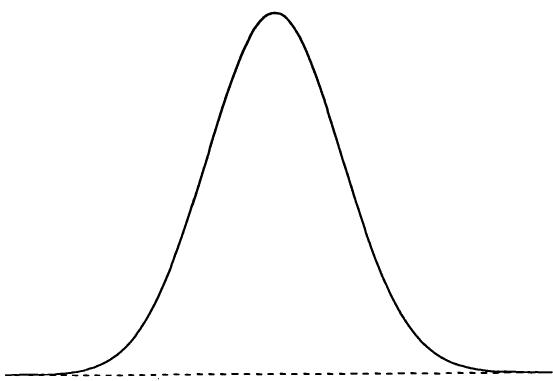
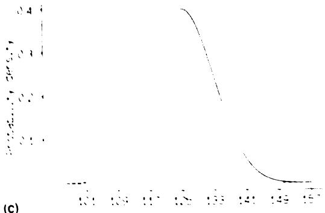
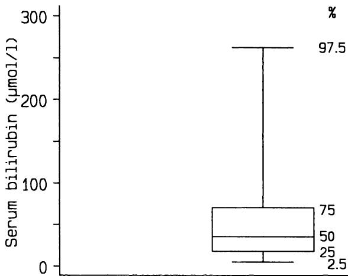
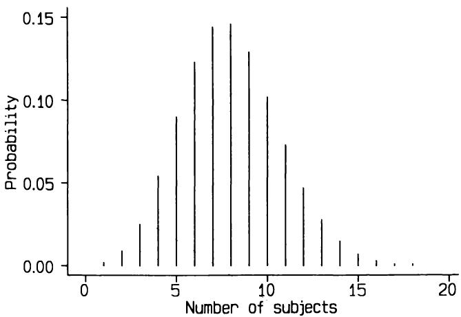

4 理论分布 4 Theoretical distributions
4.1 引言 4.1 INTRODUCTION
上一章强调了属性或反应的变异性的重要性。若无这种变异性，事件将完全可预测，统计方法也就无从谈起。正因为存在变异性，我们才需要统计分析来揭示事物的本质。例如，虽然现在普遍接受吸烟有害健康的观点，但这一认识直到20世纪40至50年代经过大量细致研究后才得以确立（Doll 和 Hill，1950）。尽管吸烟显著增加心脏病、肺癌及其他疾病的风险，但由于对吸烟的反应高度变异，这种影响曾一度被掩盖。一些重度吸烟者活到80或90岁，而许多不吸烟者却在60岁之前去世。显然，无论是观察性还是实验性研究，检测效应的能力取决于效应的平均大小和效应的变异性。我们将看到，这两者之间的平衡构成了许多主要统计方法的基础。
The importance of variability in attributes or responses was emphasized in the previous chapter. Without such variability events would be entirely predictable, and there would be no need for statistical methods. Because there is variability, we need statistical analysis to unravel what is going on. For example, while it is now universally accepted that cigarette smoking is hazardous to health, realization that this was so did not come until much careful research was carried out beginning in the 1940s and 1950s (Doll and Hill, 1950). Although the risk of heart disease, lung cancer and other diseases is considerably increased by smoking, the effect was masked because the response to smoking is highly variable. Some heavy smokers live to 80 or 90, whereas many non- smokers die before they are 60. Clearly the ability to detect effects, whether in observational or experimental studies, depends upon both the magnitude of the effect on average, and the variability of the effect. We will see that the balance between these ideas is behind a large number of the main statistical methods.
统计方法应用中的另一个基本概念是概率。我们在日常生活中经常以某种形式遇到概率。它可能是明确的，比如中奖的概率；也可能是隐含的，比如过马路而不被撞的概率。我们常常需要基于概率做出决策，例如是否带伞取决于我对下雨概率的判断。生活中的大多数方面都涉及某种概率，医学亦然。心脏移植患者活两年的概率是多少？患者对某种治疗有反应的概率是多少？腹痛患者患溃疡的概率是多少？在有适当数据的前提下，统计方法能帮助回答这些问题。但必须记住，统计分析很少给出确定答案，因此我们应当指出（或至少意识到）答案中存在一定的不确定性。
Another essential concept in the application of statistical methods is that of probability. We frequently encounter probability in some form in everyday life. It may be reasonably explicit, such as the probability of winning a lottery, or implicit, such as the probability of crossing the road without getting run over. Often we need to judge probability in relation to a decision that has to be taken, for example, whether I take an umbrella when I go out will depend on my perception of the probability of rain. Most aspects of life can be shown to involve some probabilities, and medicine is no exception. What is the probability of a heart transplant patient living for two years？ What is the probability that a patient will respond to a particular treatment？ What is the probability that a patient with a pain in his stomach has an ulcer？ Given appropriate data, statistical methods help to answer many questions like these. It must be remembered, though, that statistical analysis rarely leads to a definite answer, so that we should indicate (or at least be aware of) a degree of uncertainty in our answers.
4.2 概率 4.2 PROBABILITY
首先，我们需要考虑概率的数学本质。就本书所述统计方法而言，我将某一特定结果的概率定义为：如果我们重复进行实验或观察大量次，该结果出现的比例。例如，我们可以通过观察大量婴儿中男婴的比例来估计男婴的概率。
First, we need to consider the mathematical nature of probability. For the purposes of the statistical methods described in this book I shall define the probability of some specific outcome as the proportion of times that that outcome would occur if we repeated the experiment or observation a large number of times. For example, we can estimate the probability that a baby is a boy by observing what proportion of a large number of babies are boys.
根据定义，概率介于0和1之间；不可能发生的事件概率为0，必然发生的事件概率为1。概率因此类似于比例或百分比：概率为0.2意味着发生的机会是五分之一，即20%。概率通常不以百分比形式表达。实际上，我们大多数概率都是估计值，因为无法知道其真实值。
By definition a probability lies between 0 and 1; something that cannot happen has a probability of 0, while something that is certain to happen has a probability of 1. A probability is thus somewhat similar to a proportion or a percentage: an outcome with a probability of 0.2 means that there is a one in five, or a chance of it happening. Probabilities are not usually expressed as a percentage. In practice we have to estimate most probabilities, as there is no way of knowing the true value.
此处需考虑概率的两个简单规则：
There are two simple rules regarding probabilities that we need to consider at this stage:
1.对于给定事件，任意两个可能结果发生的概率之和等于这两个结果中任一发生的概率。
- For a given event, for any two outcomes that might happen the probability of either occurring is the sum of the individual probabilities.
例如，若某人血型为A的概率是0.43，血型为B的概率是0.08，则血型为A或B的概率为0.51。由此可知，所有可能结果的概率之和必须为1，因为其中必有一项发生。例如，不同血型的概率大致为
For example, if the probability of an individual being blood group A is 0.43 and of being group B is 0.08, then the probability of being either A or B is 0.51. It follows that the probabilities of all possible outcomes must add up to 1, since one of these possibilities must occur. For example, the probabilities of being in the different blood groups are approximately
O型:0.46；A型:0.43；B型:0.08；AB型:0.03。
O:0.46;A:0.43;B:0.08;AB:0.03.
我们这里假设所有结果是互斥的。
We assume here that all outcomes are mutually exclusive.
2.如果我们考虑两个或多个相互独立的不同事件，那么要得到每个事件特定结果组合的概率，必须将这些结果的个别概率相乘。
2. If we consider two or more different events which are independent of each other, then to get the probability of a combination of specific outcomes for each of the events we must multiply the individual probabilities of those outcomes.
独立性的概念是一个基本的统计学概念。所谓独立，意味着如果我们知道一个事件的结果，这对另一个事件的结果没有任何信息。更正式地说，第二个事件的每个可能结果的概率与第一个事件的结果无关，依此类推。例如，如果一家全科医生诊室里有三个人，他们都是O型血的概率是 ，也就是说，不到十分之一的概率。在这个语境中，独立性要求这三个人彼此无关。
The idea of independence is an essential statistical concept. By independent we mean that if we know the outcome of one event this tells us nothing about the other event. More formally, the probability of each possible outcome for the second event is the same regardless of the outcome for the first event, and so on. For example, if there are three people in a GP's waiting room, the probability that they are all blood group O is , that is, there is less than one chance in ten. In this context independence requires the three people to be unrelated.
正如我们所预期的，如果两个事件不独立，则乘法性质不适用。例如，一个男人身高超过六英尺的概率是0.2，那么他和他儿子都超过六英尺的概率不是 ，因为孩子的身高往往与父母的身高有关。
As we would expect, if two events are not independent, the multiplicative property does not apply. For example, if the probability of a man being more than six feet tall is 0.2, the probability that both he and his son are over six feet is not because the heights of children tend to
在不确定情况下，这一思想被反向利用来调查两个事件是否独立。例如，在病例对照研究中，将患病患者（病例）与无病者（对照）在某些可能有害的早期暴露方面进行比较。宫颈癌女性可能与对照组比较过去使用口服避孕药的情况。如果病例组中暴露者多于对照组，则病例和对照的暴露概率不同，从而怀疑该暴露是疾病的原因。换句话说，患病与暴露不是独立事件。
be related to the heights of their parents. This idea is used in reverse in cases of uncertainty to investigate whether two events are independent. For example, in a case- control study patients with a disease (cases) are compared with people without the disease (controls) with respect to some possibly hazardous exposure earlier in their life. Women with cervical cancer may be compared with controls with respect to past use of oral contraceptives. If more cases had the exposure than controls then the probability of having been exposed is different for cases and controls and one suspects the exposure as a cause of the disease. Another way of looking at this is to say that having the disease and having had the exposure are not independent events.
4.3 样本与总体 4.3 SAMPLES AND POPULATIONS
几乎所有统计分析都基于这样一个原则：通过对样本个体收集数据，利用这些信息对所有此类个体做出推断。这一思想在民意调查中最为常见。所有研究对象（或被调查对象）的集合称为感兴趣的总体。上一章中，展示了25名囊性纤维化患者和298名6个月至6岁正常儿童的数据。分析这些样本数据使我们能够对总体做出推断。对于这些研究，感兴趣的总体分别是所有囊性纤维化患者和所有6个月至6岁的儿童。样本的选择方式显然非常重要，下一章将讨论。
Nearly all statistical analysis is based on the principle that one acquires data on a sample of individuals and uses the information to make inferences about all such individuals. This idea is probably most familiar in the context of opinion polls. The set of all subjects (or whatever is being investigated) is called the population of interest. In the previous chapter data were presented for 25 patients with cystic fibrosis and for 298 normal children aged 6 months to 6 years. Analysing the data from these samples enables us to make inferences about the population. For these studies the populations of interest were, respectively, all patients with cystic fibrosis and all children aged 6 months to 6 years. The way the sample is selected is clearly very important, and is discussed in the next chapter.
我们采样进行研究是因为几乎不可能研究整个总体。我们或许能研究某国某一特定日期诊断为囊性纤维化的所有患者，但他们仍只是囊性纤维化患者总体的一个样本，受时间和地域限制，且未诊断病例被排除。幸运的是，我们不需要研究整个总体，因为精心选择的样本可以提供可靠的答案。我们通常无法计数或识别总体的所有成员，但样本允许我们对总体做出集体和个体的推断。例如，一项新药抗高血压效果的研究可以（在一定范围内）估计该药对未来未参加研究的高血压患者的潜在益处。
We take samples to study because it is rarely, if ever, possible to study the whole population. We might be able to study all patients diagnosed as having cystic fibrosis in one country on a particular date, but they are still only a sample of all people with cystic fibrosis, restricted by time and geography, and undiagnosed cases are excluded. Fortunately we do not need to study the whole population, as a carefully chosen sample can yield reliable answers. We cannot usually count or identify all the members of the population, but the sample allows us to draw inferences about the population, both collectively and individually. For example, a study of the anti- hypertensive effect of a new drug would allows us to estimate (within limits) the possible benefit of the drug to future hypertensive patients not in the study.
样本与总体之间的关系存在不确定性，我们用概率的概念来表示这种不确定性。理论概率分布的概念在此非常重要。
The relation between sample and population is subject to uncertainty, and we use ideas of probability to indicate this uncertainty. The idea of a theoretical probability distribution is important in this context.
4.4 概率分布 4.4 PROBABILITY DISTRIBUTIONS
在上一章中，我讨论了观察数据的分布这一概念—经验分布。许多统计方法使用相关的概率分布概念，该分布通过数学方式加以描述。
In the previous chapter I discussed the idea of a distribution of observed data - an empirical distribution. Many statistical methods use the related
概率分布用于计算不同数值出现的理论概率，因此是经验相对频率分布的理论对应物。
idea of a probability distribution which is specified mathematically. A probability distribution is used to calculate the theoretical probability of different values occurring, and is thus a theoretical equivalent of an empirical relative frequency distribution.
例如，如果我们知道成年男性身高的均值和标准差，且假设总体身高分布符合某一特定概率分布，就可以计算身高超过六英尺的概率。如果观察到男婴比例为0.52，我们可以利用这一事实和数学方法计算一位有四个孩子的女性恰好有四个女儿的概率。0.52是概率分布的一个参数，均值和标准差也是概率分布的参数。所有概率分布均由一个或多个参数描述。
For example, if we know the mean and standard deviation of the height of adult men we can calculate the probability of being more than six feet tall if we assume that the distribution of height in the population is the same as a particular probability distribution. If we know from observation that the proportion of babies that are boys is 0.52, we can use this fact together with some mathematics to find the probability that a woman with four children has four daughters. The value 0.52 is a parameter of the probability distribution, as are the mean and standard deviation in the first example. All probability distributions are described by one or more parameters.
许多统计方法基于这样一个假设：观察数据是来自具有已知理论分布形式的总体的样本。如果这一假设合理（虽然我们无法确定其真实性），统计分析方法的使用就简单且范围广泛。若分布假设不合理而我们仍按此假设进行分析，可能会得到误导性（无效）的结果。分析数据时，我们可以选择基于分布假设的方法，称为参数方法，或不作分布假设的方法，称为无分布假设或非参数方法。
Many statistical methods are based on the assumption that the observed data are a sample from a population with a distribution that has a known theoretical form. If this assumption is reasonable (we cannot establish if it is true) then the statistical methods of analysis are simple to use and wide- ranging. If the distributional assumption is not reasonable and we proceed as if it were, then we may end up with misleading (and invalid) answers. When analysing data we have a choice between methods that make distributional assumptions, called parametric methods, and those which make no assumptions about distributions, called distribution- free or non- parametric methods.
概率分布在统计分析中的重要性反映了参数方法的主导地位。首先，我将考虑连续变量的概率分布，其中一种分布—正态分布，具有根本性的意义。随后，我将讨论离散数据的概率分布。
The importance of probability distributions in statistical analysis reflects the dominance of parametric methods. First I shall consider probability distributions for continuous variables, for which one distribution in particular, the Normal distribution, is of fundamental importance. Later I shall look at probability distributions for discrete data.
4.5 正态分布 4.5 THE NORMAL DISTRIBUTION
正态分布是统计学中迄今为止最重要的概率分布。它以某种形式出现在以下大多数章节中，原因将在第8章中更详细地讨论，因此理解其性质和作用至关重要。然而，为了强调这并不意味着该分布比其他许多分布更“正常”，我使用大写字母N表示正态分布。（它有时也被称为高斯分布，以数学家高斯的名字命名。）
The Normal distribution is by far the most important probability distribution in statistics. It appears in some form in most of the following chapters, for reasons which are considered more fully in Chapter 8, so an understanding of its nature and role is essential. However, to emphasize that there is no implication that this distribution is more 'normal' than many others, I use a capital N for Normal. (It is also sometimes known as the Gaussian distribution, after the mathematician Gauss.)
在上一章中，我展示了如何用直方图来描绘一组连续变量观测值的分布。如果有成千上万的观测值，且IgM的测量更精确，IgM值可以被划分为许多极小的区间，数据的直方图看起来会更像一条平滑的曲线。因此，它并不是
In the previous chapter I showed how a histogram can be used to depict the distribution of a set of observations of a continuous variable. If there had been thousands of observations, and IgM had been recorded more precisely, the IgM values could be divided into many tiny intervals, and a histogram of the data would appear more like a smooth curve. So it is not
很难想象某些观测数据的直方图或频率多边形是某种“潜在”平滑频率分布的近似。例如，图4.1显示了216名原发性胆汁性肝硬化患者血清白蛋白值的直方图，图4.2则显示了
difficult to imagine that the histogram or frequency polygon of some observed data is an approximation to some 'underlying' smooth frequency distribution. For example, Figure 4.1 shows a histogram of serum albumin values in 216 patients with primary biliary cirrhosis, and Figure 4.2 shows a

图4.1 216名原发性胆汁性肝硬化患者血清白蛋白值的直方图（摘自Christensen等人，1985年的研究）
Figure 4.1 Histogram of serum albumin values in 216 patients with primary biliary cirrhosis (from the study by Christensen et al., 1985)
图4.2 216名原发性胆汁性肝硬化患者血清白蛋白值的频率多边形图。
Figure 4.2 Frequency polygon of serum albumin values in 216 patients with primary biliary cirrhosis.
同一数据的频率多边形图，其中效果更为明显。
frequency polygon of the same data, in which the effect is rather clearer.
连续测量的频率分布，如图4.2所示，通常只有一个峰值：称为单峰分布。它们可能相当对称，如此处，或者不对称，如第3章中讨论的IgM数据。正态分布是一种单峰且对称的概率分布；其形状见图4.3。偶尔会见到双峰频率分布，称为双峰分布，通常是不同均值的亚组混合造成的。
frequency distributions for continuous measurements, such as in Figure 4.2, tend to have a single peak: they are called unimodal. They may be fairly symmetric, as here, or asymmetric, as with the IgM data discussed in Chapter 3. The Normal distribution is a probability distribution which is unimodal and symmetric; its shape is shown in Figure 4.3. Frequency distributions with two peaks are occasionally seen. These are called bimodal, and are usually the result of mixing subgroups with different means.

图4.3 正态分布。
Figure 4.3 The Normal distribution.
在考虑如何利用正态分布之前，有一些关于连续概率分布的一般性说明。首先，它们通常没有上限，有些甚至没有下限。理论上，正态分布从负无穷大延伸到正无穷大。其次，频率曲线的高度，即概率密度，不能被视为某一特定值的概率。因为连续变量可能的取值无限多，任何具体值的概率都是零。曲线高度本身无实际意义；其数值由曲线下的总面积恒为1决定。与观察数据的直方图类似，我们通过考虑对应某一特定区间的面积来使用概率分布。由于总面积为1，该面积即对应该区间内取值的概率。举个简单例子，正态分布均值左侧的面积为0.5（因对称性），这就是小于均值的概率。
Before considering how we make use of the Normal distribution there are some general points to note about continuous probability distributions. First, they usually have no upper limit and some have no lower limit either. In theory the Normal distribution extends from minus infinity to plus infinity . Second, the height of the frequency curve, which is called the probability density, cannot be taken as the probability of a particular value. This is because for a continuous variable there are infinitely many possible values so that the probability of any specific value is zero. The height of a curve is not of any practical use; its value is determined by the fact that the total area under the curve is always taken to be 1. As with histograms of observed data, we use a probability distribution by considering the area corresponding to a particular restricted range of values. Because the total area is 1 this area corresponds to the probability of those values. To take a simple example, the area to the left
正态分布均值左侧的面积是0.5（因为对称性），这就是小于均值的概率。
of the mean of the Normal distribution is 0.5 (because of the symmetry) and this is the probability of being below the mean.
4.5.1 正态分布的应用 4.5.1 Using the Normal distribution
正态分布的数学表达式较为复杂，但我们无需直接处理它即可使用正态分布，因为相关信息已在表格中提供。然而，重要的是要知道正态分布完全由两个参数描述，即均值和标准差，通常分别用（mu）和（sigma）表示。图4.4(a)展示了正态分布与这两个参数的关系。无论均值和标准差取何值，正态分布总是如图4.4(a)所示与均值和标准差相关。图4.4(b)和4.4(c)进一步说明了这一点，分别展示了均值为10、标准差为2和均值为125、标准差为8的正态分布。图4.5显示了图4.1中血清白蛋白的直方图及其对应均值和标准差的正态分布，两者明显非常相似。
The mathematical equation of the Normal distribution is unpleasantly complicated, but we do not need to deal with it in order to use the Normal distribution, because the necessary information is readily available in tables. However, it is important to know that the Normal distribution is completely described by two parameters, the mean and the standard deviation. These are usually called (mu) and (sigma) respectively. Figure 4.4(a) shows the Normal distribution in relation to these parameters. Whatever values the mean and standard deviation have, the Normal distribution is related to the mean and standard deviation in the manner shown in Figure 4.4(a). This feature is illustrated by Figures 4.4(b) and 4.4(c), which show Normal distributions with firstly mean 10 and standard deviation 2 and secondly mean 125 and standard deviation 8. Figure 4.5 shows the histogram of serum albumin shown in Figure 4.1 and the Normal distribution with the same mean and standard deviation. The two are clearly very similar.
如图4.4(a)所示，横轴上的任意位置都可以表示为距离均值若干标准差（正或负）的距离。该距离称为标准正态偏差或正态分数。它相当于观察一个均值为0、标准差为1的正态分布，这种特殊的正态分布称为标准正态分布。任何正态分布都可以通过减去均值再除以标准差转换（或标准化）为标准正态分布。
As Figure 4.4(a) shows, any position along the horizontal axis can be expressed as a distance of a number of standard deviations (negative or positive) from the mean. This distance is known as a standard Normal deviate or Normal score. It is equivalent to looking at a Normal distribution with a mean of 0 and a standard deviation of 1, a special Normal distribution known as the standard Normal distribution. Any Normal distribution can be converted (or transformed) into a standard Normal distribution by subtracting the mean and dividing by the standard deviation.
我们使用正态分布的一种方式如下。当一组观察值的分布与正态分布相似时，我们假设总体中该变量的分布实际上是正态的，并基于此进行计算。例如，如果我们愿意假设所有原发性胆汁性肝硬化患者的血清白蛋白在总体中呈正态分布，就可以计算某患者血清白蛋白水平高于 的概率。
One way that we use the Normal distribution is as follows. When a set of observations has a distribution that is similar to a Normal distribution we assume that in the population the distribution of the variable actually is Normal, and carry out calculations on this basis. For example, we can calculate the probability that a patient with primary biliary cirrhosis has a serum albumin level greater than if we are willing to assume that, among the population of all patients with primary biliary cirrhosis, serum albumin has a Normal distribution.
附录B中的表B1显示了标准正态分布的下尾面积。下尾指的是曲线下从 到感兴趣值的面积。该面积等同于取值低于指定值的概率。这个概念也可以用累积相对频率分布来表达，如图4.6所示。表B1只是图4.6曲线的更精确版本。
Table B1 in Appendix B shows the lower tail areas of the standard Normal distribution. The lower tail means the area under the curve from up to the value of interest. This area is equivalent to the probability of a value lower than the specified value. This idea can also be expressed as the cumulative relative frequency distribution, which is shown in Figure 4.6. Table B1 is simply a more accurate version of the curve in Figure 4.6.
低于 的面积为0.16，低于 的面积为0.84，因此
The area below is 0.16 and the area below is 0.84, so that the


图4.5 显示了216个血清白蛋白值的直方图及其相同均值和标准差的正态分布曲线。
Figure 4.5 Histogram of 216 serum albumin values and the Normal distribution with the same mean and standard deviation.

图4.6 显示了拟合血清白蛋白数据的累积正态分布曲线。
Figure 4.6 Cumulative Normal distribution fitted to serum albumin data.
对应范围 到 的面积为 。换言之，对于完全正态分布的数据，有0.68的概率落在均值一个标准差范围内。对其他标准差倍数重复此计算，得到：
area corresponding to the range to is . In other words, for data with an exactly Normal distribution there is a probability of 0.68 of being within one standard deviation of the mean. Repeating these calculations for other numbers of standard deviations we get
| 范围 | 在范围内的概率 | 范围外的概率 |
| 均值 ±1SD | 0.683 | 0.317 |
| 均值 ±2SD | 0.954 | 0.046 |
| 均值 ±3SD | 0.9973 | 0.0027 |
| Range | Probability of being within range | outside range |
| mean ±1SD | 0.683 | 0.317 |
| mean ±2SD | 0.954 | 0.046 |
| mean ±3SD | 0.9973 | 0.0027 |
这些值也可从表B2获得。每种情况下，不在指定范围内的概率等于1减去在范围内的概率。我们看到，正态分布值超过均值正负三倍标准差的概率极小—0.0027，即0.27%，约为400分之一，这与图4.4的直观印象一致。当然，在非常大的样本中，我们仍会期望出现几个如此极端的值。
These values can also be obtained from Table B2. In each case the probability of not being within the stated range is 1 minus the probability of being within the range. We can see that there is a minimal chance - - 0.0027 or , or about 1 in 400 - that a value from a Normal distribution will be more than three standard deviations above or below the mean, agreeing with the visual impression gained from Figure 4.4. Of course, in very large samples we would expect several values to be this extreme.
落在均值正负两倍标准差范围内的概率略高于0.95。换言之，约95%的正态分布观测值会落在均值 到 的范围内，这与上一章的更一般性陈述相符。正如我们稍后将看到的，正态分布曲线下恰好95%的面积实际上落在稍窄的范围均值 内。
The probability of being within two standard deviations of the mean is just over 0.95. In other words, about of observations from a Normal distribution will be within the range mean to mean , which agrees with the more general statement in the previous chapter. As we will see later, exactly of the area under the Normal distribution curve actually falls in the slightly narrower range of mean .
4.5.2 一个例子 4.5.2 An example
回到血清白蛋白数据，我们可以计算在假设真实分布为正态分布的前提下，数值大于42.0的概率。血清白蛋白的平均水平为 ，标准差为 。我们首先计算42 离均值多少个标准差，计算公式为
Returning to the serum albumin data, we can calculate the probability of a value being above 42.0 on the assumption that the true distribution is Normal. The mean serum albumin level was and the standard deviation was . We first calculate how many standard deviations from the mean the value of is, which is given by
从表B1中查得，大于1.29的概率为0.0985，因此数值大于 的概率约为 。
From Table B1 we find that the probability of being greater than 1.29 is 0.0985, so the probability of a value above is .
从表B3中可以找到包含给定百分比分布的区间—中心范围。例如，90% 的分布位于均值 之间，95% 位于均值 之间，
From Table B3 we can find the values which enclose a given percentage of the distribution - the central range. For example, of the distribution lies within the range mean , within mean , and
99% 位于均值 之间。对于血清白蛋白数据，得到如下范围：
within mean . For the serum albumin data we get the following ranges:
| 中心范围 | 血清白蛋白 (g/l) |
| 90% | 24.85 到 44.07 |
| 95% | 23.01 到 45.91 |
| 99% | 19.39 到 49.53 |
| Central range | Serum albumin (g/l) |
| 90% | 24.85 to 44.07 |
| 95% | 23.01 to 45.91 |
| 99% | 19.39 to 49.53 |
因此，我们可以使用正态分布来估计总体中该变量分布的百分位数。我们本可以计算样本数据的观察百分位数并用作总体百分位数的估计，但当数据接近正态分布时，使用正态分布更为可靠，尤其是在分布的尾部。此外，方法也更简便，只需两个数值和正态分布表，而不必使用完整的原始数据集。图4.5显示，216个血清白蛋白值的分布与具有相同均值和标准差的正态分布非常相似。我们可以用刚才描述的方法，从正态分布计算出直方图各区间内预期的数值。例如，区间26.0到 内预期的数值是该区间概率乘以216。26.0和28.0对应的标准正态偏差为
We can thus use the Normal distribution to estimate the centiles of the distribution of the variable in the population. We could have calculated the observed centiles of the sample data and used these values as estimates of the population centiles, but when the data are near to Normal the use of the Normal distribution is more reliable, especially in the tails of the distribution. It is also easier, requiring just two values and a table of the Normal distribution rather than the complete set of raw data values. Figure 4.5 showed that the distribution of the 216 serum albumin values was very similar to the Normal distribution with the same mean and standard deviation. We can use the procedure just described to calculate from the Normal distribution the number of values expected in each interval of the histogram. For example, the number expected in the interval 26.0 to is the probability of being in that interval multiplied by 216. The standard Normal deviates for 26.0 and 28.0 are
从表B1查得下尾概率分别为0.0735和0.1335，两者之差为 ，即26.0到28.0之间的概率为0.0600。因此该区间内预期观测数为 。表4.1展示了类似（但更精确）计算的结果，涵盖所有数值区间，列出了观察频数和若总体血清白蛋白分布为均值 和标准差 的正态分布时的预期频数。注意，预期频数通常以小数形式表示，尽管观察频数必须是整数。
From Table B1 we get lower tail areas of 0.0735 and 0.1335, giving a probability of of being between 26.0 and 28.0. The expected number of observations in this interval is thus . Table 4.1 shows the results of similar (but more precise) calculations for the whole range of values, giving observed frequencies and the frequencies expected if the population distribution of serum albumin was a Normal distribution with the same mean and standard deviation . Note that expected numbers are usually quoted as fractions even though the observed frequencies must be whole numbers.
我在第4.4节中指出，广泛使用的参数统计分析方法包含了关于数据分布的重要假设。在大多数情况下，所涉及的分布是正态分布，这也是其成为最重要分布之一的原因。
I observed in section 4.4 that the widely- used parametric methods of statistical analysis incorporate important assumptions about the distribution of data. In most cases the distribution involved is the Normal distribution. which is one of the reasons why it is the most important distribution in
表4.1 216例原发性胆汁性肝硬化患者血清白蛋白的分布及基于相同均值和标准差的正态分布预期频数
Table 4.1 Distribution of serum albumin in 216 patients with primary biliary cirrhosis together with expected frequencies based on a Normal distribution with the same mean and standard deviation
| 血清白蛋白 (g/l) | 观察频数 | 预期频数 |
| < 20 | 0 | 1.4 |
| 20- | 2 | 2.1 |
| 22- | 6 | 4.4 |
| 24- | 7 | 8.0 |
| 26- | 9 | 13.1 |
| 28- | 21 | 19.1 |
| 30- | 20 | 24.7 |
| 32- | 28 | 28.5 |
| 34- | 39 | 29.2 |
| 36- | 28 | 26.7 |
| 38- | 22 | 21.8 |
| 40- | 12 | 15.8 |
| 42- | 11 | 10.2 |
| 44- | 4 | 5.9 |
| 46- | 3 | 3.0 |
| 48- | 1 | 1.4 |
| 50- | 1 | 0.6 |
| 52- | 1 | 0.2 |
| 54- | 0 | 0.1 |
| 56- | 1 | 0.0 |
| 总计 | 216 | 216.2 |
| Serum albumin (g/l) | Observed frequency | Expected frequency |
| < 20 | 0 | 1.4 |
| 20- | 2 | 2.1 |
| 22- | 6 | 4.4 |
| 24- | 7 | 8.0 |
| 26- | 9 | 13.1 |
| 28- | 21 | 19.1 |
| 30- | 20 | 24.7 |
| 32- | 28 | 28.5 |
| 34- | 39 | 29.2 |
| 36- | 28 | 26.7 |
| 38- | 22 | 21.8 |
| 40- | 12 | 15.8 |
| 42- | 11 | 10.2 |
| 44- | 4 | 5.9 |
| 46- | 3 | 3.0 |
| 48- | 1 | 1.4 |
| 50- | 1 | 0.6 |
| 52- | 1 | 0.2 |
| 54- | 0 | 0.1 |
| 56- | 1 | 0.0 |
| Total | 216 | 216.2 |
统计学。虽然许多测量值确实近似服从正态分布，比如人体身高，但许多则不然，如人体体重或血清胆固醇。数据偏离正态性的方式多种多样，尤以非对称或偏斜为主。图3.3中展示的IgM数据即表现出正偏斜。不能假设一组观察值近似正态分布—必须加以验证。与正态分布密切相关的一种常见偏斜分布是对数正态分布，下一节将对此进行讨论。
statistics. Although many measurements do have a reasonably Normal distribution, such as human height, many do not, such as human weight or serum cholesterol. There are various ways in which data may deviate from Normality, notably by being asymmetric or skewed. The IgM data shown in Figure 3.3 illustrated positive skewness. It should not be assumed that a set of observations is approximately Normal - this must be established. One common type of skewed distribution closely related to the Normal distribution is the Lognormal distribution, which is discussed in the next section.
4.5.3 抽样变异 4.5.3 Sampling variation
图4.5展示了血清白蛋白观察值与具有相同均值和标准差的正态分布的直观比较。是否可以认为数据足够接近正态分布的问题
Figure 4.5 showed a visual comparison of a set of observations of serum albumin and the Normal distribution having the same mean and standard deviation. The question of whether data are close enough to a Normal
分布很重要，并将在后续章节的多个部分中加以讨论。
distribution is important, and will be considered at various points in the following chapters.
虽然可以使用正式的方法（第7章中有描述），但判断一组观察值是否近似正态分布通常依赖于主观判断，通常通过观察直方图来完成。观察从正态分布中随机抽取样本所得的分布作为参考，有助于判断一组观测数据的分布情况。图4.7展示了16个样本的频率直方图，每个样本包含50个从标准正态分布中随机抽取的观察值。每个样本相当于考虑从一个已知变量服从正态分布的总体中抽取的50个个体。这些样本的分布表现出较大的不规则性，关键特征如单峰性和对称性通常缺失。在判断观察数据是否可能来自正态分布时，尤其是样本量较小时，应牢记这一点。
Although formal methods can be used (described in Chapter 7), whether a set of observations are reasonably Normal is often a matter of judge ment, usually by visual inspection of a histogram. It is instructive to look at distributions obtained by taking random samples from a Normal distribu tion to give a reference against which to judge a set of observed data. Figure 4.7 shows frequency histograms of 16 samples of 50 observations sampled at random from the standard Normal distribution. Each sample is equivalent to considering 50 individuals sampled from a population known to have a Normal distribution for the variable of interest. There is considerable irregularity in the distributions of these samples, with the key properties of unimodality and symmetry generally absent. This figure should be borne in mind when considering whether observed data might have come from a Normal distribution, especially when the sample size is small.

图4.7 正态分布中16个样本（每个样本50个观测值）的分布。
Figure 4.7 Distributions of 16 samples of size 50 from the Normal distribution.
4.6 对数正态分布 4.6 THE LOGNORMAL DISTRIBUTION
在第3.4节中我们看到，在某些情况下，一组呈正偏态分布的数据通过取对数可以转化为对称分布。对偏态分布的数据取对数，通常会得到接近正态的分布。图4.8显示了同一216名原发性患者的血清胆红素水平的直方图。
In section 3.4 we saw that in some circumstances a set of data with a positively skewed distribution can be transformed into a symmetric distribution by taking logarithms. Taking logs of data with a skewed distribution will often give a distribution that is near to Normal. Figure 4.8 shows a histogram of serum bilirubin levels in the same 216 patients with primary

图4.8 原发性胆汁性肝硬化（PBC）患者216例血清胆红素值的直方图及拟合的正态分布（摘自Christensen等，1985年的研究）。
Figure 4.8 Histogram of serum bilirubin values in 216 patients with primary biliary cirrhosis with fitted Normal distribution (from the study by Christensen et al., 1985).
胆汁性肝硬化（PBC）。均值和标准差分别为60.7和 。叠加的最佳拟合正态分布（均值和标准差相同）与数据的拟合非常差，原因是数据极度偏斜。如果对数据取自然对数（以e为底），则得到一个更对称的分布，均值为3.55，标准差为 。图4.9显示了 血清胆红素的直方图及拟合的正态分布，拟合效果明显更好。图4.10显示了原始数据及拟合正态分布函数的“反变换”。拟合曲线是对数正态分布函数的一个例子。对数正态分布的数据可通过取对数转换为正态分布。
biliary cirrhosis (PBC). The mean and standard deviation are 60.7 and respectively. The superimposed best- fitting Normal distribution (with the same mean and standard deviation) is a terrible fit to the data because of the extreme skewness. If we take logs (to base e) of the data we get a much more symmetric distribution with a mean of 3.55 and a standard deviation of . Figure 4.9 shows a histogram of serum bilirubin with the fitted Normal distribution, which is a much better fit. Figure 4.10 shows the raw data with the 'back- transformation' of the fitted Normal distribution function. The fitted curve is an example of the Lognormal distribution function. Data with a Lognormal distribution can be transformed to Normality by taking logarithms.
对于像血清胆红素测量这样偏斜的数据，取对数转换通常能产生近似正态分布。我们可以在对数数据上进行计算，然后将结果转换回原始尺度。例如，我们可能希望用数据估计包含所有PBC患者95%血清胆红素水平的区间。假设数据服从对数正态分布，我们可以利用均值为3.547、标准差为1.030的正态分布进行计算（这些值比上文所示更准确）。在对数单位上，95%的分布预计位于均值减去 和均值加上 之间。具体数值为：
With skewed data like the serum bilirubin measurements log transformation will often produce approximate Normality. We can then perform our calculations on the log data and transform the answers back to the original scale. For example, we may wish to use our data to estimate the values enclosing of serum bilirubin levels for all patients with PBC. Assuming a Lognormal distribution, we can make our calculations from the Normal distribution with mean 3.547 and standard deviation 1.030 (these being more accurate values than those shown above). In log units, of the distribution will be expected to be between mean and mean . These values are

图4.9 血清胆红素对数值的直方图及拟合的正态分布（以e为底的对数）。
Figure 4.9 Histogram of log serum bilirubin with fitted Normal distribution (logarithms to base e).
图4.10 血清胆红素的直方图及拟合的对数正态分布。
Figure 4.10 Histogram of serum bilirubin with fitted Lognormal distribution.
这些数值的反对数（使用函数 ）分别为 和 。对数数据均值的反对数为 ，即数据的几何均值。所有这些数值都在图4.11的箱线图中展示。
The antilogs of these values (using the function ) are and . The antilog of the mean of the log data is , which is the geometric mean of the data. All of these values are depicted in a box- and- whisker diagram in Figure 4.11.
不应假设偏斜分布的数据都能通过转换近似为正态分布。必须通过视觉检查（如图4.9）或第7.5节描述的方法正式验证。
It should not be assumed that data with a skewed distribution can be transformed to approximate Normality. This must be established, perhaps visually as in Figure 4.9 or formally using the methods described in section 7.5.

图4.11 血清胆红素的箱线图，显示基于对数数据拟合正态分布得出的95%中心区间。
Figure 4.11 Box-and-whisker diagram of serum bilirubin showing central range derived from fitting a Normal distribution to log data.
4.7 二项分布 4.7 THE BINOMIAL DISTRIBUTION
离散数据中最简单的概率分布是只有两种可能性的情况。血型为B的概率约为0.08，因此血型为O、A或AB的概率为0.92。对于一组无关的人，我们可以计算不同人数属于血型B的概率。两个人都属于血型B的概率是 ，两个人都不属于血型B的概率是 。我们将概率相乘是因为两个人的血型是独立的。仅有一人属于血型B的概率更复杂，因为有两种情况可能发生。因此，恰有一人属于血型B的概率为 。
The simplest probability distribution for discrete data is when there are only two possibilities. The probability of being in blood group B is about 0.08 so the probability of being group O, A or AB is 0.92. For a group of unrelated people, we can work out the probability of different numbers of people being in blood group B. The probability of two people both being in blood group B is thus , and the probability of neither being in blood group B is . We multiply the probabilities because the blood groups of two unrelated people are independent. The probability of only one of the two being in blood group B is more complicated, because there are two ways in which this could happen. Thus the probability of exactly one of two people being in blood group B .
我们可以将这些可能性总结如下：
We can summarize the possibilities as follows:
64 理论分布
64 Theoretical distributions

图4.12显示了两人中属于血型B人数的概率分布。该分布是二项分布的一个简单例子。为了得到图中显示的三个概率，我们做了三次简单计算。然而，如果将计算扩展到四个人的情况，计算就不那么简单了。每个人要么是血型B，要么不是，因此可能的排列组合是 ，即16种。对于 个人，可能的排列组合数是 ，例如七个人则有128种可能。
Figure 4.12 shows the probability distribution of the number of people out of two in blood group B. This distribution is a simple example of the Binomial distribution. To get the three probabilities shown we had to make three simple calculations. However, if we extend this simple calculation to consider the number of people out of four it is not so easy. Each person is either group B or not group B so there are possible orderings, which is 16. The number of possible orderings for people is , so if we have seven people for example, there are 128 possible orderings.
幸运的是，我们可以使用一个通用公式来跳过大部分计算。由于公式较复杂，详细内容见第4.9节。利用该公式，可以根据单个事件发生的概率，计算一系列事件中某种结果出现不同次数的概率。例如，图4.13显示了概率分布。
Fortunately, we can bypass most of the calculations by using a general formula. As it is rather complicated, the details are given in section 4.9. Using the formula one can calculate the probability of different numbers of outcomes of a particular type in a series of events from the probability of one such outcome. For example, Figure 4.13 shows the probability

图4.12 两人中属于血型B人数的二项分布。
Figure 4.12 Binomial distribution of number of people out of two in blood group B.
属于血型B的10人中人数的概率分布。（计算过程见第4.9节。）该分布是不对称的，但随着样本量增加，二项分布会变得
distribution for the number of individuals out of 10 being of blood group B. (The calculations are shown in section 4.9. ) The distribution is asymmetric, but as the sample size increases the Binomial distribution becomes

图4.13 基于血型B概率为0.08，显示10人中属于血型B人数的二项分布。
Figure 4.13 Binomial distribution showing the number of subjects out of ten in blood group B based on the probability of being in blood group B of 0.08.

图4.14 基于血型B概率为0.08，显示100人中属于血型B人数的二项分布。
Figure 4.14 Binomial distribution showing the number of subjects out of 100 in blood group B based on the probability of being in blood group B of 0.08.
越来越对称，并逐渐趋近于正态分布。图4.14显示，100人样本中血型B人数的二项分布几乎是对称的。
more symmetric and gradually begins to look like a Normal distribution. Figure 4.14 shows that the Binomial distribution for the number of people in blood group B in a sample of 100 is almost symmetric.
二项分布有时用于比较观察到的数据集与预期分布。其主要用途是在只有两种可能性的情况下分析数据，例如某人是否患有哮喘。这里我们关注的是患哮喘受试者的比例。这类数据在医学研究中经常出现，我们常常希望比较不同受试者组中某类事件发生的比例。组内样本量通常足够大，二项分布近似于具有相同均值和标准差的正态分布，从而简化分析（见第10章）。
The Binomial distribution is sometimes used to compare an observed set of data with the expected distribution. Its main use, however, is in the analysis of data where there are only two possibilities, such as whether or not someone suffers from asthma. Here we are interested in the proportion of subjects with asthma. Data of this type occur frequently in medical research, and we often wish to compare the proportion of events of a certain type occurring in different groups of subjects. The sample sizes in the groups are often large enough for the Binomial distribution to be very like a Normal distribution with the same mean and standard deviation, which simplifies analysis (see Chapter 10).
4.8 泊松分布 4.8 THE POISSON DISTRIBUTION
另一种离散数据类型是计数事件发生的次数，可能针对不同受试者或时间单位。此类数据的例子包括癌症登记处每日报告的新乳腺癌病例数，以及一系列肝活检组织切片中固定面积的异常细胞数。
A different type of discrete data arises when we count the number of occurrences of an event, perhaps for different subjects or for units of time. Examples of data like this are the daily number of new cases of breast cancer notified to a cancer registry, and the number of abnormal cells in a fixed area of histological slides from a series of liver biopsies.
这类数据的理论背景最易用事件随时间（或空间）以固定平均速率独立随机发生来描述。此类数据服从泊松分布。例如，癌症每日新登记病例平均为2.2，但某天可能无新病例，也可能有多例。若假设泊松分布条件成立，我们可以计算某天出现任意新病例数的概率。图4.15展示了这些概率（计算过程见4.9节）。
The theoretical situation giving rise to data of this type is easiest to describe in relation to events occurring over time (or space) at a fixed rate on average, but where each event occurs independently and at random. Such data will have a Poisson distribution. For example, the daily number of new registrations of cancer may be 2.2 on average, but on any day there may be no new cases or there may be several. If we assume that the conditions for a Poisson distribution hold, we can calculate the probability of any number of new cases on a single day. These probabilities are shown in Figure 4.15 (and the calculations are shown in section 4.9).
当均值较小时，泊松分布高度偏斜，如本例，但均值较大（如50）时，分布趋于对称。实际上，类似二项分布，泊松分布也趋近于正态分布。注意泊松分布无理论最大值，但概率迅速趋近于零。
The Poisson distribution is very asymmetric when its mean is small, as here, but with a large mean, such as 50, it becomes nearly symmetric. In fact, like the Binomial distribution, it becomes more like a Normal distribution. Note that the Poisson distribution has no theoretical maximum value, but the probabilities tail off towards zero very quickly.
表4.2展示了可能服从泊松分布的数据。该表记录了1978至1982年印度三个小区域在满月日和新月日的每日犯罪次数。表中还列出了基于与观察数据相同均值的泊松分布计算出的不同犯罪次数的预期天数。观察频数与预期频数尤其在新月日表现出高度一致，说明数据接近泊松分布。
Table 4.2 shows some data that might be expected to follow a Poisson distribution. The table gives the number of crimes per day in three small areas of India from 1978 to 1982, on days where there was either a full moon or a new moon. Also shown are the expected number of days with different numbers of crimes, based on Poisson distributions with the same means as the observed data. The similarity between the observed and expected frequencies is clear, especially for the new moon days, demonstrating that these data are close to a Poisson distribution.
泊松分布由单一参数完全描述。
The Poisson distribution is completely described by a single parameter.

图4.15 均值为2.2的泊松分布。
Figure 4.15 Poisson distribution with mean 2.2.
表4.2 1978至1982年印度三个区域每日犯罪次数（Thakur和Sharma，1984），显示观察频数（Obs）和基于泊松分布的预期频数（Exp）。
Table 4.2 Number of crimes per day in three areas of India during 1978 to 1982 (Thakur and Sharma, 1984) showing observed frequencies (Obs) and expected frequencies using the Poisson distribution (Exp)
| 犯罪次数 | 满月日 | 新月日 | ||
| 观察值 | 预期值 | 观察值 | 预期值 | |
| 0 | 40 | 45.2 | 114 | 112.8 |
| 1 | 64 | 63.1 | 56 | 56.4 |
| 2 | 56 | 44.3 | 11 | 14.1 |
| 3 | 19 | 20.7 | 4 | 2.4 |
| 4 | 1 | 7.1 | 1 | 0.3 |
| 5 | 2 | 2.0 | 0 | 0.0 |
| 6 | 0 | 0.5 | 0 | 0.0 |
| 7 | 0 | 0.1 | 0 | 0.0 |
| 8 | 0 | 0.0 | 0 | 0.0 |
| 9 | 1 | 0.0 | 0 | 0.0 |
| 总计 | 183 | 183.0 | 186 | 186.0 |
| 均值 | 1.40 | 0.50 | ||
| 标准差 | 1.16 | 0.75 | ||
| Number of crimes | Full moon days | New moon days | ||
| Obs | Exp | Obs | Exp | |
| 0 | 40 | 45.2 | 114 | 112.8 |
| 1 | 64 | 63.1 | 56 | 56.4 |
| 2 | 56 | 44.3 | 11 | 14.1 |
| 3 | 19 | 20.7 | 4 | 2.4 |
| 4 | 1 | 7.1 | 1 | 0.3 |
| 5 | 2 | 2.0 | 0 | 0.0 |
| 6 | 0 | 0.5 | 0 | 0.0 |
| 7 | 0 | 0.1 | 0 | 0.0 |
| 8 | 0 | 0.0 | 0 | 0.0 |
| 9 | 1 | 0.0 | 0 | 0.0 |
| Total | 183 | 183.0 | 186 | 186.0 |
| Mean | 1.40 | 0.50 | ||
| SD | 1.16 | 0.75 | ||
如第4.9节所示，均值是如此，因为泊松分布的方差恰好等于均值。因此，如果来自不同来源的数据都能被视为接近泊松分布且具有相同均值，它们的分布将非常相似。
the mean, as is shown in section 4.9, because the variance of the Poisson distribution turns out to be the same as the mean. It follows that data from different sources will have very similar distributions if they can both be
表4.3 印度新月日犯罪分布（Thakur和Sharma，1984年）与1971年蒙特利尔一家医院每日死亡人数分布（Zweig和Csank，1978年）比较
Table 4.3 Comparison of distributions of crimes on new moon days (Thakur and Sharma, 1984) and number of deaths per day in a Montreal hospital in 1971 (Zweig and Csank, 1978)
| n | 印度新月日犯罪 | 蒙特利尔医院每日死亡 | 泊松分布预期（0.51） | ||
| % | 频数 | % | 频数 | % | |
| 0 | 61.3 | 114 | 60.3 | 220 | 60.0 |
| 1 | 30.1 | 56 | 31.0 | 113 | 30.6 |
| 2 | 5.9 | 11 | 6.3 | 23 | 7.8 |
| 3 | 2.2 | 4 | 2.2 | 8 | 1.3 |
| 4+ | 0.5 | 1 | 0.3 | 1 | 0.2 |
| 总计 | 100.0 | 186 | 100.0 | 365 | 99.9% |
| 均值 | 0.505 | 0.512 | |||
| 标准差 | 0.752 | 0.736 | |||
| n | Crimes on new moon days in India | Deaths per day in a hospital in Montreal | Expected distribution Poisson (0.51) | ||
| % | Frequency | % | Frequency | % | |
| 0 | 61.3 | 114 | 60.3 | 220 | 60.0 |
| 1 | 30.1 | 56 | 31.0 | 113 | 30.6 |
| 2 | 5.9 | 11 | 6.3 | 23 | 7.8 |
| 3 | 2.2 | 4 | 2.2 | 8 | 1.3 |
| 4+ | 0.5 | 1 | 0.3 | 1 | 0.2 |
| Total | 100.0 | 186 | 100.0 | 365 | 99.9% |
| Mean | 0.505 | 0.512 | |||
| SD | 0.752 | 0.736 | |||
如果数据都可视为接近泊松且均值相同，表4.3显示印度新月日犯罪数的相对频率分布与蒙特利尔医院每日死亡人数的分布几乎完全相同。两组观测数据都非常接近均值为0.51的泊松分布。
considered to be close to Poisson and have the same mean. Table 4.3 shows that the relative frequency distribution of the number of crimes on new moon days in India is virtually identical to the distribution of the number of deaths per day in a hospital in Montreal. Both observed sets of data are very close to a Poisson distribution with a mean of 0.51.
泊松分布适合研究罕见事件。我们可以将问题视为二项分布问题，其中感兴趣结果的概率非常小，但事件总数很大。虽然泊松分布在医学研究中的应用不多，但它像二项分布一样，在某些其他统计分析中隐含使用。
The Poisson distribution is appropriate for studying rare events. We can consider the problem as being the same as that of the Binomial distribution where the probability of the outcome of interest is very small but there are a large number of events. The Poisson distribution is not used greatly in medical research although, like the Binomial distribution, it is used implicitly in some other types of statistical analysis.
4.9 数学计算 4.9 MATHEMATICAL CALCULATIONS
（本节提供与二项分布和泊松分布相关的数学计算。可跳过而不影响内容连贯性。）
(This section gives the mathematical calculations relating to the sections on the Binomial and Poisson distributions. It can be omitted without loss of continuity.)
4.9.1 二项分布 4.9.1 Binomial distribution
举例来说，假设我们想计算10人中不同人数为B型血的概率，。例如，特定4人是B型血的概率为 ，因此任何4人是B型血的概率是该概率乘以从10人中选4人的组合数。
To take an example, suppose we wish to calculate the probability of different numbers of individuals out of ten being blood group B, for which . The probability of, say, a particular 4 of the 10 people being blood group B is , so that the probability of any 4 being blood group B is this probability multiplied by the number of ways of choosing 4 people from 10.
一般来说，假设有 个“事件”，我们想计算其中0、1、2直到 个为某特定类型的概率， 是该类型结果的总体概率。则 个此类事件的二项分布概率为
In general, suppose we have 'events' and wish to calculate the probability of 0, 1, 2, up to of them being a specific type, where is the overall probability of this type of outcome. Then the Binomial probability of such events is given by
其中， 是从 个项目中选择 个的方式数，这是一个需要计算的数值。
where is the number of ways of choosing items from , and is a number we have to calculate.
我们可以通过以下关系简单地计算 ：
We can evaluate simply by using the following relations:
以及
and
(iii) 。
(iii) .
因此，我们有
So we have
因此，10人中有4人为B型血的概率是
The probability that 4 of the 10 people are blood group B is thus
或者为 。图4.13展示了完整的分布。
or . Figure 4.13 shows the complete distribution.
系数 的通用公式是
The general formula for the coefficients is
70 理论分布
70 Theoretical distributions
其中 （读作 n 的阶乘）等于 （见附录A）。注意 （见附录A）。系数 可以从 的表格中获得（Lentner, 1982，第74-81页），或按上述方法计算。
where (pronounced n factorial) is equal to (see Appendix A). Note that (see Appendix A). The coefficients can be obtained from tables of (Lentner, 1982, pp. 74- 81), or calculated in the way described above.
如果感兴趣事件的真实比例为 ，则样本容量为 时，二项分布的均值为 ，标准差为 。
If the true proportion of events of interest is , then in a sample of size the mean of the Binomial distribution is and the standard deviation is .
4.9.2 泊松分布 4.9.2 Poisson distribution
泊松分布中 个事件发生的概率通用公式为 ，其中 （希腊字母 mu）是均值， 是数学常数，约等于 2.718（见附录A）。标准差为 。
The general Poisson formula for the probability of events is where (the greek letter mu) is the mean and is a mathematical constant approximately equal to 2.718 (see Appendix A). The standard deviation is .
如果满足泊松分布的条件，则某天无新病例的概率为
If the conditions for a Poisson distribution hold, the probability of getting no new cases on a day is
最适合数据的泊松分布具有与观察值相同的均值：2.2。因此这里 为 。我们可以不用上述复杂公式，而通过关系式 计算 、 等，其中 是样本均值。于是我们有
The Poisson distribution that will fit the data best has the same mean as that of the observations: 2.2. So here is . Rather than use the complicated formula above we can calculate , , etc. from the relation , where is the sample mean. So we have
等等。该分布如图4.15所示。
and so on. The distribution is shown in Figure 4.15.
注意，这很好地说明了在一系列计算中保持完整数值精度的必要性，因为任何由舍入引起的误差都会影响后续所有计算。
Note that this is a good example of the need to keep full numerical precision through a series of calculations, because any error caused by
不过，上述数字为了便于展示已被四舍五入。
rounding would affect all subsequent calculations. The figures shown above have, however, been rounded to clarify the presentation.
4.10 均匀分布 4.10 THE UNIFORM DISTRIBUTION
另一个问题是确定疾病发病是否存在季节性变化。如果没有季节性变化，我们预期每个月新发病例数变化不大。例如，如果某区综合医院的糖尿病门诊一年登记了126例新发病例，且糖尿病发病无季节性，那么我们预期每个月新发病例数约为126的十二分之一，即10.5例。（我们可以对不同月份天数的差异作轻微修正。）实际上，自然变异会导致每月新发病例数有所波动，但若无季节性，这种波动是无规律的；若有季节性，则会呈现某种系统性趋势。理论上的均匀分布，即每个月相对频率相同的分布，用于检验此类数据。周期性变化的统计分析将在第14.7节讨论。
A different problem is that of determining whether there is a seasonal variation in the onset of a disease. If there is no seasonal variation we would expect little variation in the number of new cases each month. For example, if a diabetes clinic in a district general hospital registers 126 new cases in a year, and if there were no seasonality for the onset of diabetes, then we would expect to have one- twelfth of 126 or 10.5 new cases in every month. (We could make a slight correction for the variation in the number of days in a month.) In practice natural variability will lead to some variation in the monthly accrual of new cases, but this will be unsystematic if there is no seasonality, whereas there will be some systematic trend if there is seasonality. The theoretical Uniform distribution, which has the same relative frequency for each month, is used for examining such data. Statistical analysis of periodic variation is discussed in section 14.7.
4.11 结语 4.11 CONCLUDING REMARKS
理论分布在很大比例的统计分析中都有涉及。其中，正态分布是最重要的一种。除了许多分析假设数据服从正态分布外，正态分布在许多统计推断方法中也扮演核心角色，如第8章所述。
Theoretical distributions feature in some way in a large proportion of statistical analysis. The Normal distribution is by far the most important of those discussed. Apart from the assumptions of many analyses that the data follow a Normal distribution, there is also a central role for the Normal distribution in many methods of statistical inference, as described in Chapter 8.
本章未讨论的概率分布还有很多。这些大多是专用的，不会在本书中出现，但有三种在后续章节的统计分析中很重要：分布、分布和卡方分布。
There are many other probability distributions not discussed in this chapter. Most of these are of specialized use and will not appear in this book, but three are important in statistical analyses described in later chapters: the distribution, the distribution and the Chi squared distribution.
练习 EXERCISES
4.1 假设成年男性的身高服从正态分布，身高超过平均值两个标准差以上的男性比例是多少？
4.1 Assuming that the height of adult males has a Normal distribution, what proportion of males will be more than two standard deviations above the mean height？
4.2 血型为B的概率是0.08。如果从100名无关的献血者中各取一品脱血液，获得少于三品脱B型血的概率是多少？
4.2 The probability of being blood group B is 0.08. What is the probability that if one pint of blood is taken from each of 100 unrelated blood donors fewer than three pints of group B blood will be obtained？
4.3 新生儿是男孩的概率为0.52。在同一产房连续分娩的六位女性中，下列哪种男女婴儿的具体顺序最可能，哪种最不可能？
4.3 The probability of a baby being a boy is 0.52. For six women delivering consecutively in the same labour ward on one day, which of the following exact sequences of boys and girls is most likely and which least likely？
GBGBGB BBBGGG GBBBBB
GBGBGB BBBGGG GBBBBB
4.4 二项分布，参数为 和 ，概率如下：
4.4 The Binomial distribution with and is as follows:
| r | 概率 | r | 概率 |
| 0 | 0.1969 | 6 | 0.0012 |
| 1 | 0.3474 | 7 | 0.0001 |
| 2 | 0.2759 | 8 | 0.0000 |
| 3 | 0.1298 | 9 | 0.0000 |
| 4 | 0.0401 | 10 | 0.0000 |
| 5 | 0.0085 |
| r | Probability | r | Probability |
| 0 | 0.1969 | 6 | 0.0012 |
| 1 | 0.3474 | 7 | 0.0001 |
| 2 | 0.2759 | 8 | 0.0000 |
| 3 | 0.1298 | 9 | 0.0000 |
| 4 | 0.0401 | 10 | 0.0000 |
| 5 | 0.0085 |
(a) 如果所有怀孕中有15%导致流产，那么10名孕妇中超过一半流产的概率是多少？
(a) If of all pregnancies result in miscarriages, what is the probability that more than half of a group of ten pregnant women will have a miscarriage？
(b) 在使用视频显示终端的用户群中，有20000个足够大样本使得10名女性在一年内怀孕。如果我们将10人中6人或以上流产称为“聚集”，假设使用终端不增加流产风险，一年内预期会有多少个这样的“聚集”？（基于Blackwell和Chang，1988）
(b) Among groups of users of video display terminals there are 20000 large enough for ten women to become pregnant in one year. If we call six or more miscarriages out of 10 a 'cluster', how many clusters would we expect in one year, assuming that there is no increased risk of miscarriage associated with using a terminal？ (Based on Blackwell and Chang, 1988)
4.5 如果学校中存在感染，预计会传播给10%的儿童
4.5 If an infection is present in a school it would be expected to spread to of the children
(a) 应检测多少儿童，才能以0.95（95%）的概率检测出感染？（提示：考虑如果学校存在感染，所有检测样本儿童均为阴性的概率。）
(a) How many children should be tested to have a probability of 0.95 of detecting the infection if it is there？ (Hint: consider the probability of all the children in the sample being negative to the test if the infection is present in the school.)
(b) 学校中儿童人数对该计算有什么影响？
(b) What is the effect of the number of children in the school on this calculation？
4.6 在25年期间，成年男性的平均身高从 增加到 ，但标准差保持在 。警察部队对男性的最低身高要求是 。假设成年男性的身高服从正态分布，那么在这25年开始和结束时，身高不足以成为警察的男性比例是多少？
4.6 Over a 25 year period the mean height of adult males increased from to , but the standard deviation stayed at . The minimum height requirement for men to join the police force is . What proportion of men would be too short to become policemen at the beginning and end of the 25 year period, assuming that the height of adult males has a Normal distribution？
4.7 一位研究人员计划测量若干受试者的血压。他打算进行三次测量，但计划舍弃
4.7 A researcher plans to measure blood pressure in a number of subjects. He proposes to take three measurements, but intends to discard the
如果第三次测量值不在前两次测量值之间，则认为其不可靠。假设受试者的血压在测量过程中保持恒定，那么对于某个特定受试者，第三次测量值不落在另外两个值之间的概率是多少？（提示：答案不依赖于血压测量的变异性。）请对研究者的提议进行评论。
third measurement as unreliable if it does not fall between the first two measurements. Assuming that the subjects' blood pressure stays constant during the measuring, what is the probability that for a given subject the third value will not lie between the other two？ (Hint: the answer does not depend upon the variability of blood pressure measurements.) Comment on the researcher's proposal.
【4】8 在英国，最常见的常染色体隐性遗传病是囊性纤维化，约每2000个活产儿中有1个受影响。如果双方父母均为该异常基因的杂合子，其子女患囊性纤维化的概率为1/4。
4.8 In Britain the commonest autosomal recessive disorder is cystic fibrosis, with about one in 2000 live births being affected. If both parents are heterozygous for the abnormal gene there is a 1 in 4 chance of their child having cystic fibrosis.
(a) 两个都是杂合子的夫妇生育两个未受影响孩子的概率是多少？
(a) What is the probability that a couple who are both heterozygous will have two unaffected children？
(b) 如果他们已经有四个未受影响的孩子，那么他们的第五个孩子未受影响的概率是多少？
(b) If they have four unaffected children, what is the probability that their fifth child would be unaffected？
(c) 大约每22个人中有一个是囊性纤维化的杂合子。在一家每年有3500个新生儿的医院里，假设没有遗传咨询，每年预期患囊性纤维化的婴儿数量是多少？
(c) About one in 22 people is heterozygous for cystic fibrosis. In a hospital where there are 3500 births a year, what is the expected number of babies per year affected by cystic fibrosis (assuming that there is no genetic counselling)？